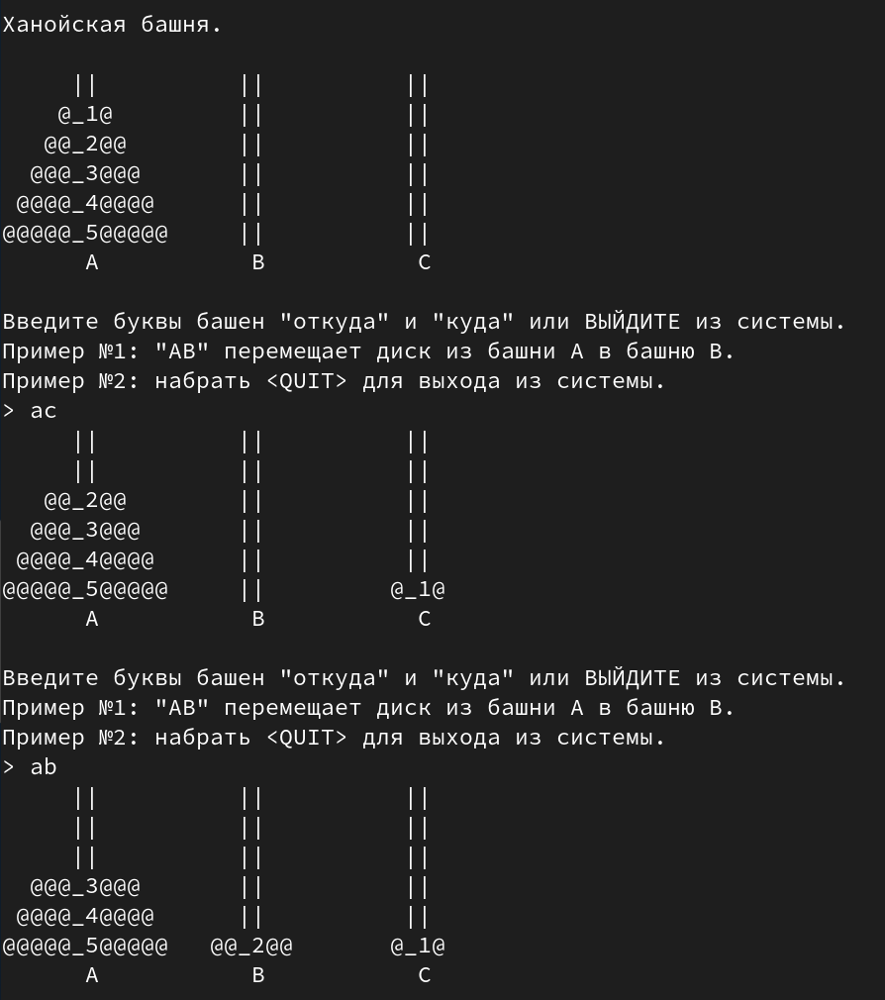

21. Ханойская башня.
Условие:
"Ханойская башня" - головоломка, в которой дано три стержня, на один из которых нанизаны диски различного размера. Цель игры - перенести стопку дисков на другой стержень. При этом можно переносить за один раз только один диск и нельзя класть больший диск на меньший.
Нужно написать программу, которая реализует данную идею и отобразит весь процесс интерактивно.
Пример программы:

Код:
import copy, sys, bext
def askForPlayerMove(towers):
"""Переместим диск с одного столба на другой."""
while True: # спрашивать в цикле перемещение, пока не будет введено правильно
print('Введите буквы башен "откуда" и "куда" или ВЫЙДИТЕ из системы.')
print('Пример №1: "AB" перемещает диск из башни A в башню B.')
print('Пример №2: набрать <QUIT> для выхода из системы.')
response = input('> ').upper().strip() # переменная содержит строку, в которой указан маршрут перемещения
if response == 'QUIT':
print()
print('Игра окончена!!!')
print()
sys.exit()
"""проверка валидности ввода маршрута для перемещения"""
if response not in ('AB', 'AC', 'BA', 'BC', 'CA', 'CB'):
print('Введите правильно и по-английски. Пример: AB, AC, BA, BC, CA, или CB.')
continue
fromTower, toTower = response[0], response[1]
if len(towers[fromTower]) == 0:
print('Первая башня пустая. Сделайте другой ход.')
continue
elif len(towers[toTower]) == 0:
return fromTower, toTower
elif towers[toTower][-1] < towers[fromTower][-1]:
print('Такой ход невозможен. Нельзя переместить больший диск на меньший.')
continue
else:
return fromTower, toTower
def displayDisk(width):
"""Отобразить диск заданной ширины. Ширина, равная 0, означает отсутствие диска."""
emptySpace = ' ' * (TOTAL_DISKS - width)
if width == 0: # Отображение сегмента поля без диска
print(emptySpace + '||' + emptySpace, end='')
else:
disk = '@' * width
numLabel = str(width).rjust(2, '_')
print(emptySpace + disk + numLabel + disk + emptySpace, end='') # отобразить диск
def displayTowers(towers):
"""Отобразить три башни."""
for level in range(TOTAL_DISKS, -1, -1): # диапазон 5, 4, 3, 2, 1, 0, здесь 6 элементов - это высота столба
for tower in (towers['A'], towers['B'], towers['C']): # [5, 4, 3, 2, 1], [], []
if level >= len(tower):
displayDisk(0) # отобразить столб без диска
else:
displayDisk(tower[level]) # отобразить диск на столбе
print() # после печати строки из трёх столбов перейдем на след. строку
emptySpace = ' ' * (TOTAL_DISKS)
print('{0} A{0}{0} B{0}{0} C\n'.format(emptySpace)) # печать названия башен
def main():
bext.clear()
print()
print("Ханойская башня.\n")
# Установите башни. В конце списка находится вершина башни.
towers = {'A': copy.copy(COMPLETE_TOWER), 'B': [], 'C': []} # в переменной словарь {"A": [5, 4, 3, 2, 1], "B": [], "C": []}
while True:
"""Отобразить башни и диски"""
displayTowers(towers)
"""Переместим диск с одного столба на другой"""
fromTower, toTower = askForPlayerMove(towers)
"""переместим диск с одной башни на другую"""
disk = towers[fromTower].pop()
towers[toTower].append(disk)
"""проверка окончания игры"""
if COMPLETE_TOWER in (towers['B'], towers['C']):
displayTowers(towers)
print('Игра окончена')
sys.exit()
TOTAL_DISKS = 5 # количество дисков
COMPLETE_TOWER = list(range(TOTAL_DISKS, 0, -1)) # старт со всеми дисками на башне A, в переменной список [5, 4, 3, 2, 1]
if __name__ == '__main__':
main()